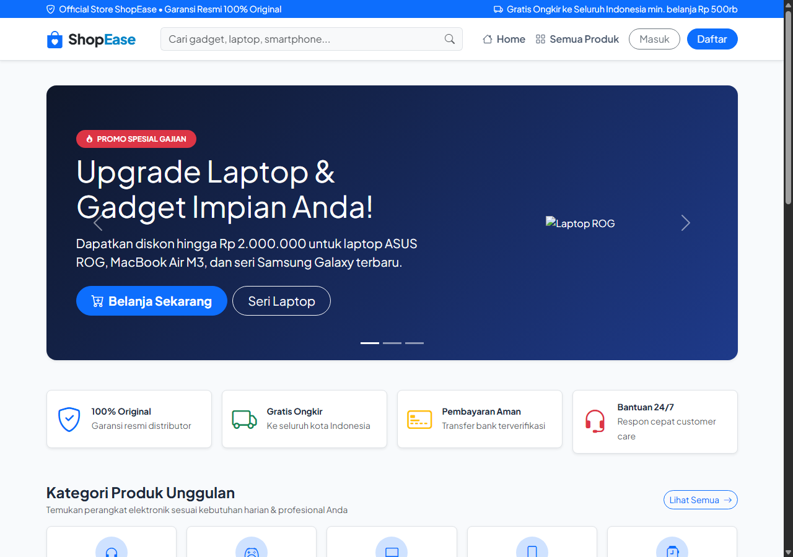
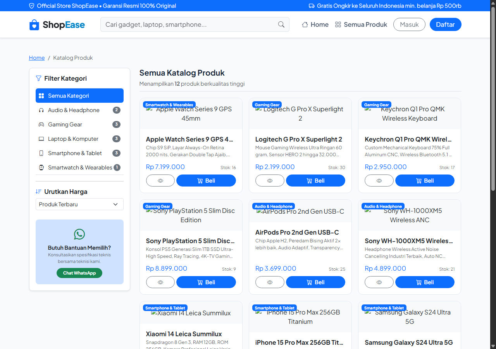
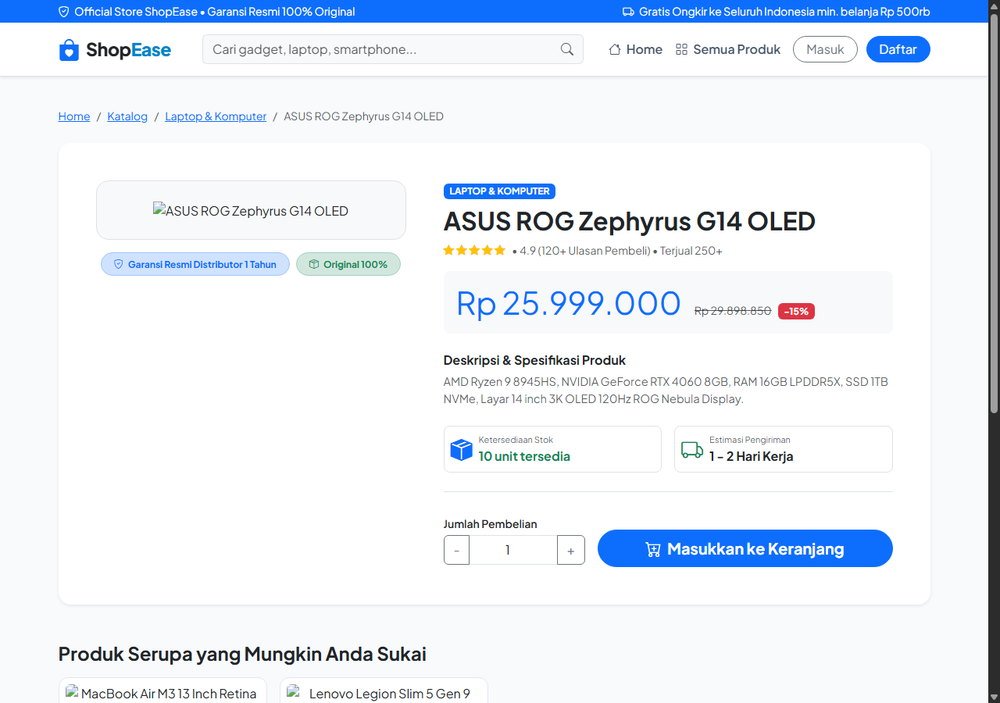
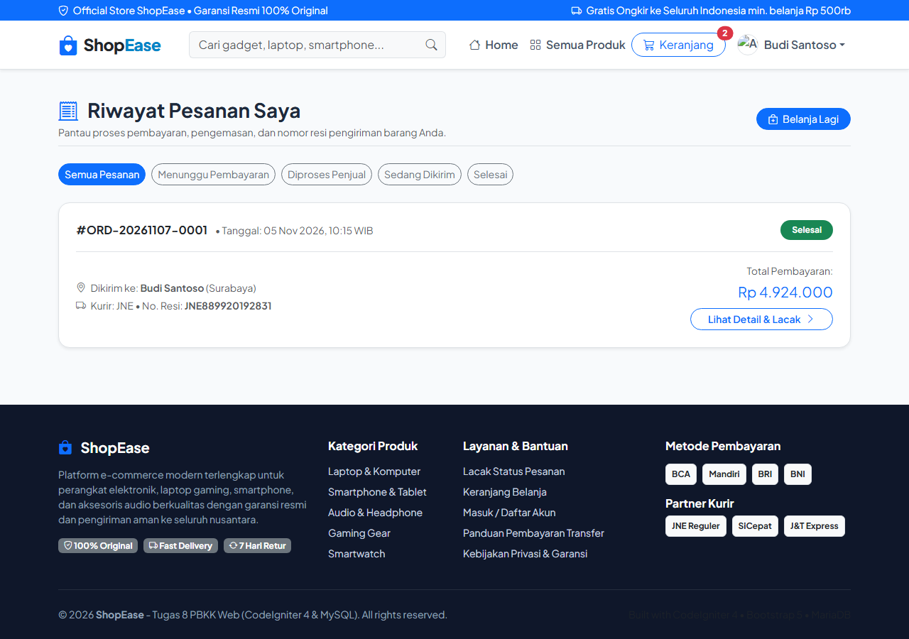
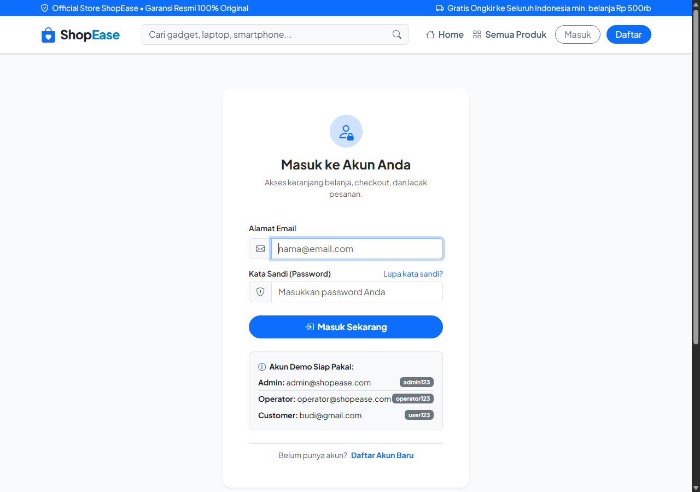
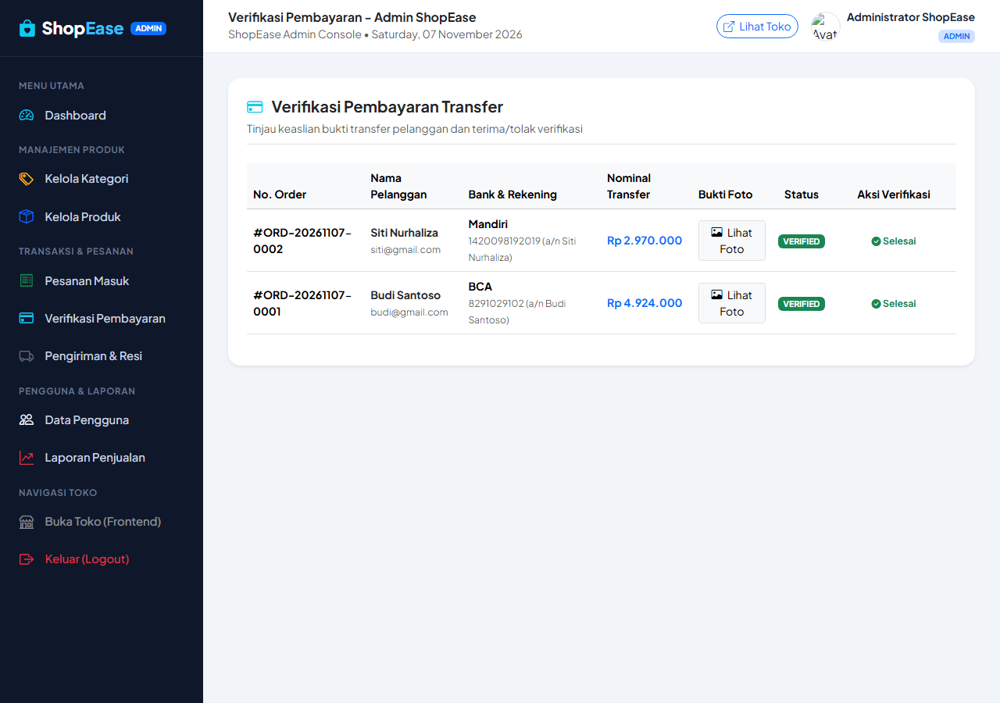
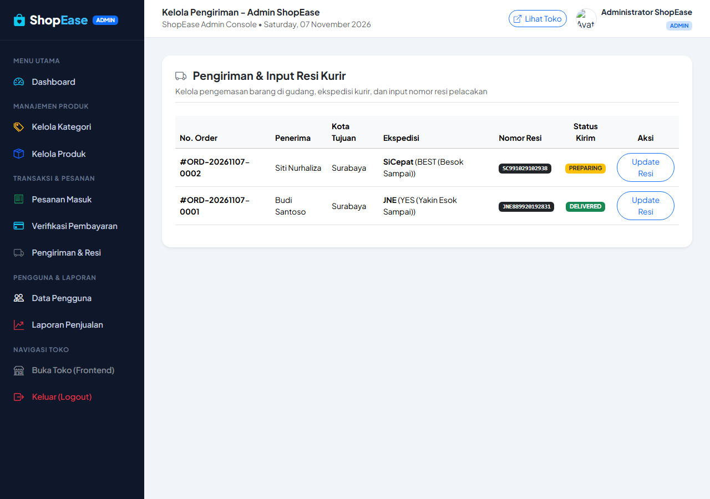

Soal :
Mengembangkan aplikasi toko online ShopEase - Online Store menggunakan framework CodeIgniter 4 (PHP 8) dan database MySQL (MariaDB) berdasarkan panduan project-based learning. Aplikasi harus mengimplementasikan pola arsitektur Model-View-Controller (MVC) secara menyeluruh dengan pembagian hak akses 3 aktor (Administrator, Operator Toko, dan Customer), fitur katalog produk dengan filter dan pencarian, sistem keranjang belanja (Shopping Cart) persisten, pemrosesan transaksi checkout dan manajemen pesanan dengan snapshot harga historis, unggah bukti pembayaran transfer, modul inventaris CRUD kategori dan produk dengan upload gambar, verifikasi pembayaran, manajemen pengiriman kurir dan nomor resi, pelaporan omset penjualan, proteksi CSRF, session otentikasi hashing password, serta database trigger untuk otomatisasi pengurangan dan pemulihan stok barang.
Jawaban :
Pada Tugas 8 ini, telah dibangun aplikasi toko online lengkap bernama ShopEase - Online Store dengan standar arsitektur modern CodeIgniter 4. Seluruh fitur backend dan frontend telah diuji dan berjalan sempurna di atas server PHP 8.2 dan database MySQL:
1. Identitas Studi Kasus & Hak Akses Aktor
Sistem membedakan tiga aktor utama dengan hak akses dan wewenang yang terpisah secara ketat:
| Aktor | Hak Akses dan Aktivitas Utama |
|---|---|
| Administrator | Login ke dashboard analitik; mengelola master kategori dan produk (CRUD + upload foto); mengatur harga, stok, dan status publikasi; memantau data pelanggan; memproses transaksi pesanan; meninjau dan memverifikasi/menolak bukti transfer pembayaran; mengelola pengiriman kurir dan nomor resi; melihat rekapitulasi laporan penjualan dan omset berkala. |
| Operator Toko | Melihat pesanan masuk dari pelanggan; memproses pesanan di gudang; memperbarui status pemrosesan dan pengemasan; memperbarui informasi nomor resi pengiriman kurir; memantau ketersediaan stok fisik barang. |
| Customer (Pelanggan) | Registrasi akun baru dan login aman; menelusuri homepage dengan banner promo; melihat katalog produk, filter kategori, pencarian, dan pengurutan harga; melihat spesifikasi teknis di halaman detail; memasukkan barang ke keranjang belanja (Shopping Cart); melakukan checkout pesanan dan memilih alamat kirim; mengunggah foto bukti transfer pembayaran; memantau riwayat dan progres status pengiriman pesanan hingga selesai. |
2. Arsitektur Pola MVC CodeIgniter 4 & Struktur Folder
ShopEase membagi tanggung jawab sistem ke dalam pola Model-View-Controller murni:
- Model (
app/Models/): Mengelola interaksi dengan database MySQL menggunakan CodeIgniter 4 Model, Query Builder, validasi data, dan relasi tabel. - Controller (
app/Controllers/): Mengendalikan alur logika bisnis, memproses request HTTP, validasi masukan form, sanitasi input, transaksi database, manipulasi session, dan merender view. - View (
app/Views/): Menampilkan antarmuka pengguna (UI) responsif menggunakan template layout terpisah (layouts/main.phpuntuk customer danlayouts/admin.phpuntuk admin). - Filter Middleware (
app/Filters/): Memproteksi rute sensitif pelanggan (AuthFilter) dan rute back-office (RoleFilter).
Contoh Struktur Direktori Proyek:
shopease/
├── app/
│ ├── Config/
│ │ ├── Routes.php # Definisi routing RESTful dan grup middleware
│ │ ├── Filters.php # Registrasi alias filter Auth dan Role
│ │ └── Database.php # Konfigurasi koneksi MySQL
│ ├── Controllers/
│ │ ├── HomeController.php # Halaman utama (banner promo, rekomendasi)
│ │ ├── AuthController.php # Login, Registrasi, dan Logout
│ │ ├── ProductController.php # Katalog, pencarian, filter, detail barang
│ │ ├── CartController.php # Tambah, update kuantitas, hapus keranjang
│ │ ├── CheckoutController.php # Transaksi checkout pesanan & alamat
│ │ ├── OrderController.php # Riwayat pesanan & upload bukti bayar
│ │ └── Admin/
│ │ ├── DashboardController.php # Statistik ringkasan toko & alert stok
│ │ ├── CategoryController.php # CRUD data kategori
│ │ ├── ProductController.php # CRUD produk & upload gambar
│ │ ├── OrderController.php # Detail pesanan & update status
│ │ ├── PaymentController.php # Verifikasi bukti transfer
│ │ ├── ShipmentController.php # Manajemen kurir & input nomor resi
│ │ ├── UserController.php # Daftar akun customer & staff
│ │ └── ReportController.php # Rekap omset dan laporan berkala
│ ├── Models/
│ │ ├── UserModel.php ├── ProductModel.php ├── CategoryModel.php
│ │ ├── CartModel.php ├── CartItemModel.php ├── AddressModel.php
│ │ ├── OrderModel.php ├── OrderItemModel.php ├── PaymentModel.php
│ │ └── ShipmentModel.php
│ ├── Views/
│ │ ├── layouts/ (main.php, admin.php)
│ │ ├── auth/ (login.php, register.php)
│ │ ├── frontend/ (home.php, products/, cart/, checkout/, orders/)
│ │ └── admin/ (dashboard.php, categories/, products/, orders/, payments/, shipments/, users/, reports/)
│ └── Filters/
│ ├── AuthFilter.php # Memastikan user telah login
│ └── RoleFilter.php # Membatasi akses berdasarkan role (admin/operator)
├── public/
│ ├── uploads/
│ │ ├── products/ # File gambar produk yang diunggah
│ │ ├── payments/ # File bukti transfer yang diunggah pelanggan
│ │ └── avatars/ # Avatar foto profil user
│ ├── index.php # Front controller utama CodeIgniter 4
│ └── .htaccess # URL rewriting Apache
├── writable/ # Cache, logs, dan sesi CI4
├── db_shopease.sql # Skema SQL, trigger otomatis, dan data seed
└── .env # Konfigurasi environment database3. Desain Database, Relasi Antar Tabel, dan Trigger Otomatis
Database db_shopease dirancang menggunakan 10 tabel inti yang saling berelasi dengan integritas referensial (Foreign Key):
| No | Nama Tabel | Fungsi dan Keterangan Data |
|---|---|---|
| 1 | users | Menyimpan akun pengguna (nama, email, hash password, role: admin/operator/customer, nomor telepon, avatar). |
| 2 | categories | Menyimpan kategori produk, slug URL unik, deskripsi, dan nama ikon Bootstrap. |
| 3 | products | Informasi lengkap produk, referensi ke category_id, nama, slug, harga, stok fisik, status (active/inactive), dan nama file gambar. |
| 4 | carts | Menyimpan entitas keranjang belanja aktif milik customer (relasi 1-to-1 dengan user). |
| 5 | cart_items | Daftar rincian item produk dan kuantitas belanja yang ada di dalam keranjang aktif. |
| 6 | addresses | Buku alamat pengiriman milik customer (nama penerima, nomor telepon, alamat jalan, kota, kode pos). |
| 7 | orders | Header faktur pesanan (nomor order unik, total harga, ongkos kirim, grand total, status pesanan, catatan pelanggan). |
| 8 | order_items | Rincian produk yang dibeli beserta snapshot harga historis saat transaksi terjadi. |
| 9 | payments | Informasi pembayaran transfer bank, bank tujuan, rekening pengirim, bukti foto transfer, dan status verifikasi admin. |
| 10 | shipments | Informasi ekspedisi pengiriman paket, layanan kurir, nomor resi pelacakan, dan status kirim (preparing, in_transit, delivered). |
Trigger Otomatis Pengurangan & Pemulihan Stok (MySQL)
Untuk menjamin konsistensi stok barang dan mencegah race condition atau kelalaian kalkulasi di controller, sistem memanfaatkan dua buah Database Trigger pada MySQL:
-- Trigger 1: Kurangi stok produk secara otomatis saat item pesanan baru dibuat
DELIMITER $$
CREATE TRIGGER `trg_reduce_stock_after_order` AFTER INSERT ON `order_items`
FOR EACH ROW BEGIN
UPDATE `products`
SET `stock` = `stock` - NEW.`quantity`
WHERE `id` = NEW.`product_id`;
END$$
-- Trigger 2: Pulihkan stok produk kembali jika status pesanan diubah menjadi 'cancelled'
CREATE TRIGGER `trg_restore_stock_on_cancel` AFTER UPDATE ON `orders`
FOR EACH ROW BEGIN
IF OLD.`status` != 'cancelled' AND NEW.`status` = 'cancelled' THEN
UPDATE `products` p
INNER JOIN `order_items` oi ON p.`id` = oi.`product_id`
SET p.`stock` = p.`stock` + oi.`quantity`
WHERE oi.`order_id` = NEW.`id`;
END IF;
END$$
DELIMITER ;4. Logika Kode Kunci & Cara Kerjanya
A. Proteksi Rute dengan Role-Based Filter (RoleFilter.php)
CodeIgniter 4 menyediakan mekanisme Filter yang berjalan sebelum controller dipanggil. Pada ShopEase, filter memeriksa session dan memastikan hanya pengguna dengan role yang diizinkan (misal: admin atau operator) yang dapat membuka halaman administrasi:
public function before(RequestInterface $request, $arguments = null)
{
$session = session();
if (!$session->get('isLoggedIn')) {
return redirect()->to(base_url('login'));
}
$userRole = $session->get('role');
$allowedRoles = $arguments ?? ['admin'];
// Tolak akses jika role pengguna tidak terdaftar dalam argument rute
if (!in_array($userRole, $allowedRoles, true)) {
$session->setFlashdata('error', 'Akses ditolak! Anda tidak memiliki izin untuk membuka halaman tersebut.');
return redirect()->to(base_url());
}
}B. Transaksi Checkout Pesanan & Snapshot Harga (CheckoutController.php)
Saat customer menekan tombol buat pesanan, controller menjalankan validasi stok, menghitung ulang total harga di backend (tidak mempercayai client), dan membungkus seluruh operasi database dalam Database Transaction agar atomik:
$db = \Config\Database::connect();
$db->transBegin();
try {
// 1. Simpan Header Pesanan (Orders)
$orderId = $this->orderModel->insert([
'order_number' => $this->orderModel->generateOrderNumber(),
'user_id' => $userId,
'address_id' => $addressId,
'total_amount' => $subtotal,
'shipping_cost'=> 20000.00,
'grand_total' => $subtotal + 20000.00,
'status' => 'pending',
]);
// 2. Simpan Item Pesanan (Snapshot Harga & Memicu Trigger Pengurangan Stok)
foreach ($items as $item) {
$this->orderItemModel->insert([
'order_id' => $orderId,
'product_id' => $item['product_id'],
'product_name' => $item['product_name'],
'price' => $item['price'], // Harga saat transaksi
'quantity' => $item['quantity'],
'subtotal' => $item['price'] * $item['quantity'],
]);
}
// 3. Buat Rekord Pembayaran & Pengiriman Awal
$this->paymentModel->insert(['order_id' => $orderId, 'amount' => $grandTotal, 'status' => 'pending']);
$this->shipmentModel->insert(['order_id' => $orderId, 'courier' => $courier, 'status' => 'preparing']);
// 4. Kosongkan Keranjang Belanja Customer
$this->cartItemModel->where('cart_id', $cart['id'])->delete();
$db->transCommit();
return redirect()->to(base_url('orders/' . $orderId));
} catch (\Exception $e) {
$db->transRollback();
return redirect()->to(base_url('cart'))->with('error', 'Gagal memproses pesanan: ' . $e->getMessage());
}C. Upload File & Validasi Keamanan (Unggah Bukti Bayar & Foto Produk)
File yang diunggah divalidasi ketat terhadap ukuran file (maks 4MB), tipe MIME, dan ekstensi gambar yang diizinkan (jpg, png, webp, svg). Nama file diubah secara acak menggunakan getRandomName() untuk menghindari tabrakan nama dan celah eksekusi script berbahaya:
$rules = [
'proof_image' => 'uploaded[proof_image]|max_size[proof_image,4096]|is_image[proof_image]|ext_in[proof_image,jpg,jpeg,png,webp,svg]',
];
if ($this->validate($rules)) {
$img = $this->request->getFile('proof_image');
$newName = $img->getRandomName();
$img->move(FCPATH . 'uploads/payments', $newName);
}5. Alur Proses Bisnis Transaksi (Workflow 10 Tahap)
ORD-20261107-XXXX), menyimpan snapshot harga, mengosongkan keranjang, dan trigger otomatis memotong stok barang.6. Skenario Pengujian Fungsional (12 Skenario)
| No | Skenario Pengujian | Hasil yang Diharapkan | Status |
|---|---|---|---|
| 1 | Registrasi customer dengan data lengkap dan valid. | Akun berhasil dibuat dan password tersimpan dalam bentuk Bcrypt hash. | Passed |
| 2 | Login dengan email dan password valid. | Pengguna berhasil masuk dan session diarahkan sesuai role (Admin ke Dashboard, Customer ke Beranda). | Passed |
| 3 | Login dengan kata sandi salah. | Akses ditolak dan alert pesan kesalahan ditampilkan di form login. | Passed |
| 4 | Tambah kategori & produk baru melalui admin. | Data tersimpan di tabel database dan langsung tampil di halaman katalog. | Passed |
| 5 | Ubah (edit) harga dan stok produk. | Perubahan data terupdate di database dan tercermin di etalase toko. | Passed |
| 6 | Hapus produk yang sudah tidak dijual. | Produk berhasil dihapus dari tabel produk. | Passed |
| 7 | Upload file non-gambar pada foto produk. | Validasi CI4 menolak file dan menampilkan pesan kesalahan format. | Passed |
| 8 | Menambahkan produk ke keranjang belanja. | Item dan kuantitas tersimpan di database cart_items. | Passed |
| 9 | Checkout dengan stok barang mencukupi. | Pesanan terbentuk dan trigger MySQL otomatis mengurangi kuantitas stok. | Passed |
| 10 | Checkout melebihi stok yang tersedia. | Transaksi ditolak oleh controller dan stok barang tidak berkurang. | Passed |
| 11 | Customer mengunggah foto bukti pembayaran. | File tersimpan di uploads/payments/ dan status pembayaran menjadi Pending. | Passed |
| 12 | Admin memverifikasi dan menyetujui pembayaran. | Status pembayaran menjadi Verified dan status pesanan beralih ke Processing. | Passed |
7. Dokumentasi Antarmuka Aplikasi
Berikut adalah 12 tangkapan layar antarmuka pengguna (UI) dari sistem ShopEase yang telah aktif dan berfungsi penuh:
1. Halaman Beranda (Homepage) & Banner Promosi

2. Katalog Produk & Filter Sidebar

3. Detail Spesifikasi Produk

4. Keranjang Belanja (Shopping Cart)

5. Halaman Checkout & Pemilihan Alamat

6. Riwayat Pesanan Customer

7. Halaman Masuk Akun (Login)

8. Dashboard Administrator

9. Manajemen Master Kategori

10. Manajemen Inventaris Produk & Stok

11. Verifikasi Pembayaran Transfer

12. Pengiriman & Input Nomor Resi Kurir

8. Petunjuk Menjalankan Proyek Secara Lokal
Ikuti langkah-langkah berikut untuk menjalankan aplikasi ShopEase di komputer lokal:
- Pastikan web server Apache dan database MySQL (MariaDB) telah berjalan di XAMPP / Laragon.
- Buka
phpMyAdmin, buat database baru dengan namadb_shopease. - Import file
db_shopease.sql(yang tersedia di folderTugas 8/db_shopease.sql) ke database tersebut. - Buka terminal/PowerShell pada folder project
Tugas 8/shopeasedan jalankan server pengembangan CodeIgniter 4:cd "Tugas 8/shopease" php spark serve - Buka browser dan akses alamat aplikasi:
http://localhost:8080/(atau via Apache:http://localhost/PBKK-web/Tugas%208/shopease/public/). - Gunakan kredensial akun demo berikut untuk mencoba seluruh fitur aplikasi:
- Akun Administrator: Email:
admin@shopease.com| Password:admin123 - Akun Operator Gudang: Email:
operator@shopease.com| Password:operator123 - Akun Customer / Pembeli: Email:
budi@gmail.com| Password:user123
- Akun Administrator: Email: